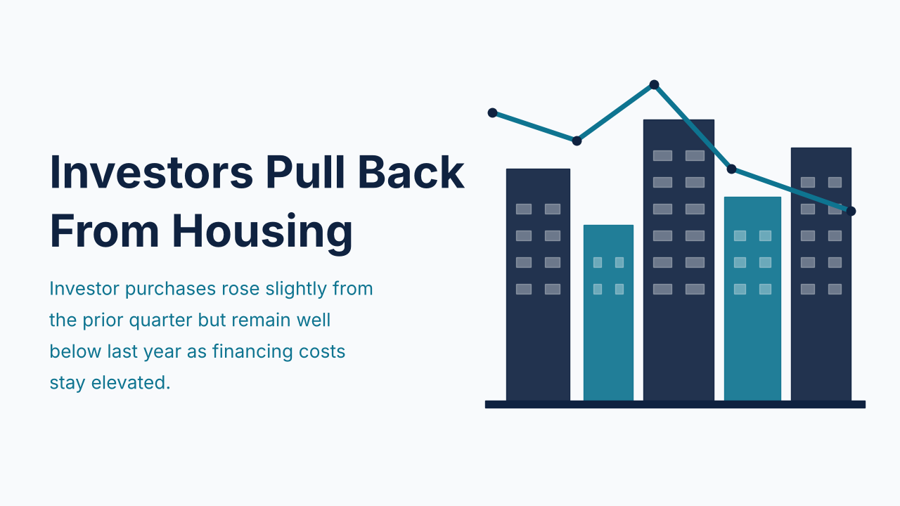
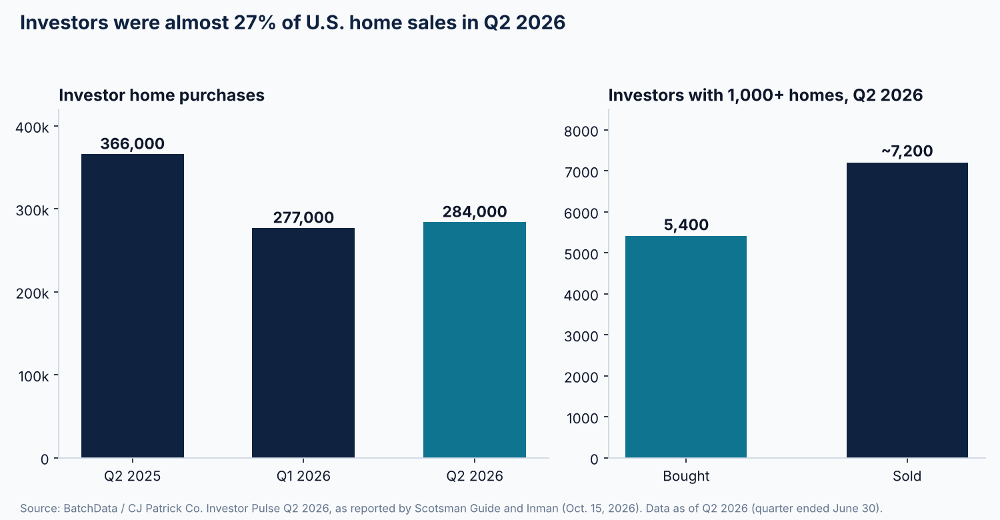

Investors Bought Nearly 27% of U.S. Homes in Q2, With Purchases 22% Below a Year Earlier

Investors accounted for almost 27% of U.S. home sales in the second quarter of 2026, according to BatchData's Investor Pulse report, the first reading below 30% in five quarters. The company counted just over 284,000 investor purchases for the quarter, up from roughly 277,000 in the first quarter but 82,000 fewer than the 366,000 recorded in the second quarter of 2025, a decline of about 22%. The report was published on October 15 and 16, 2026, and was covered by Scotsman Guide and Inman.
The quarterly uptick is small against the broader market. Investor purchases rose by about 6,700 transactions, while total existing-home sales rose by more than 323,000, which is why the investor share slipped even as the raw count improved. The pullback is also uneven by size. Investors holding 1,000 or more homes bought about 5,400 properties in the quarter and sold almost 7,200, the tenth consecutive quarter in which that group sold more than it bought. Roughly 92% of investor-owned single-family homes sit with investors who own only a handful of properties, so the segment that remains active is mostly small, individual operators.
Scale matters when sizing the market. BatchData estimates investors own about 16 million single-family homes and townhouses, roughly 18% of the more than 86 million in the country. Inman reported a typical investor purchase price of $449,776 for the quarter, and that figure should be read against financing costs that have moved sharply. Inman cited an average 30-year fixed rate of about 6.41% across April through June 2026. Freddie Mac's survey released October 15, 2026 put the 30-year fixed rate at 7.40%, unchanged from the prior week and up from 6.27% a year earlier.

Two cautions apply. Investor share figures depend heavily on how each provider defines an investor and which transactions it counts, so readings from different providers are not interchangeable and comparisons should be made within a single series. In addition, the figures above describe the second quarter, which ended before the most recent rise in mortgage rates, so third-quarter data may look different.
For lenders, a market with fewer large buyers and a steady base of small operators points to a pipeline of smaller loans, with borrower strength depending on documented rent, reserves, and leverage rather than portfolio scale. For investors, the practical step this week is to rerun each target property's numbers at current rates rather than the rates that prevailed when the deal was first identified.